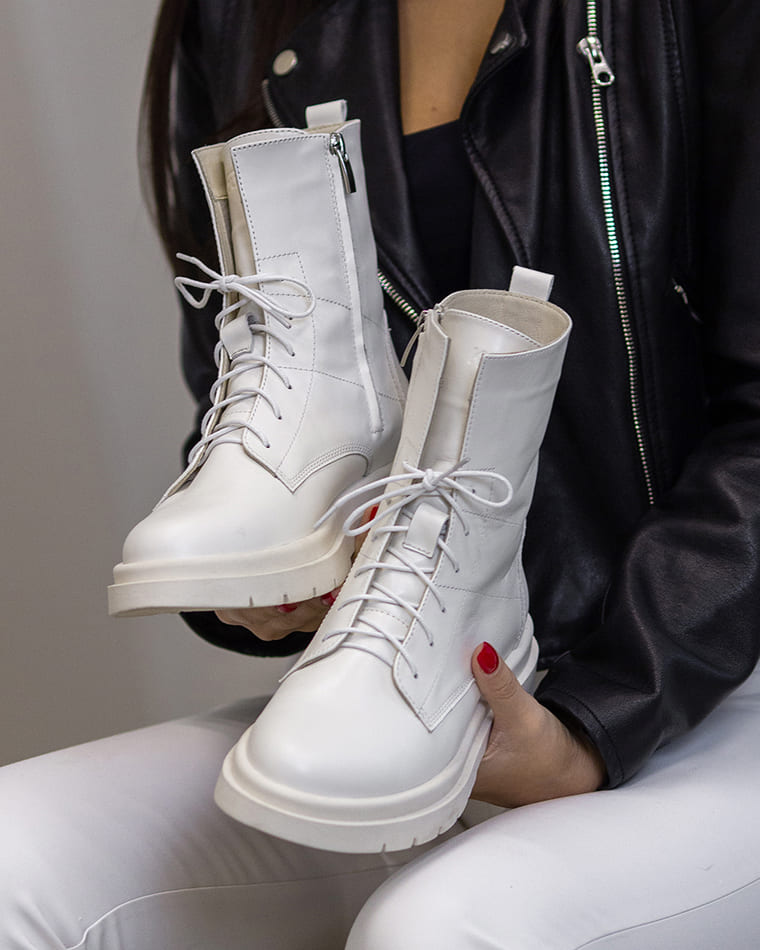

<section class="advantage__section" id="advantage">
  <div class="container">
    <div class="advanatge__section-wrapper">
      <div class="advantage__content">
        <h2 class="advantage__title"><span class="second__font">Чому</span> саме <span class="bold">KEDUKI?</span></h2>
        <p class="advantage__text">Італійський бренд, який поєднав бездоганний дизайн і щоденний комфорт.</p>
        <div class="advantages">
          <div class="advantage advantage__1">
            <h3 class="advantage__number">100</h3>
            <p class="advantage__item-text">
              <span>натуральна шкіра преміум-класу.</span> М’яка, еластична й витримує температуру до –25°C без втрати
              вигляду.
            </p>
          </div>
          <div class="advantage advantage__2">
            <h3 class="advantage__number">12</h3>
            <p class="advantage__item-text">
              <span>етапів контролю якості.</span> Перед потраплянням у продаж кожна пара проходить ретельну перевірку —
              від шва до підошви.
            </p>
          </div>
          <div class="advantage advantage__3">
            <h3 class="advantage__number">98</h3>
            <p class="advantage__item-text">
              <span>покупців</span> відзначили, що черевики не потребують «розношування» — комфортні з першого кроку.
            </p>
          </div>
          <div class="advantage advantage__4">
            <h3 class="advantage__number">2</h3>
            <p class="advantage__item-text">
              <span>роки гарантії</span> на шви та підошву — ми впевнені у своїй роботі.
            </p>
          </div>
        </div>
        
      </div>
    </div>
  </div>
</section>
